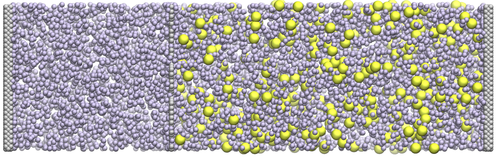
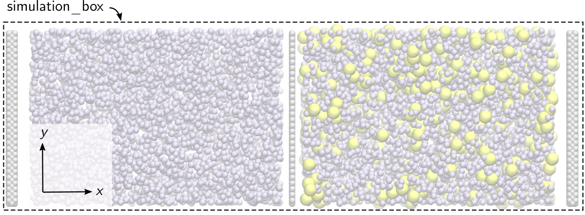
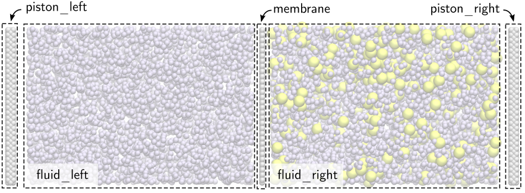
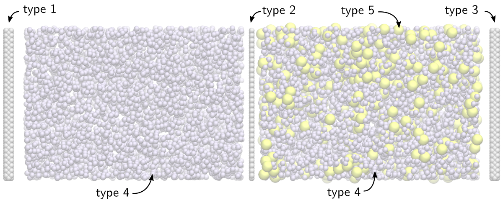
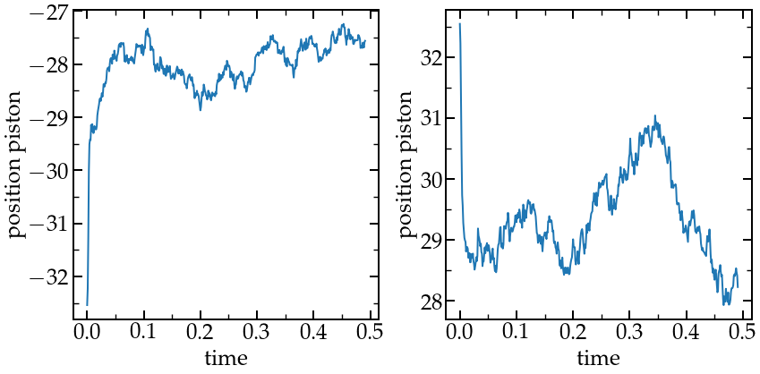
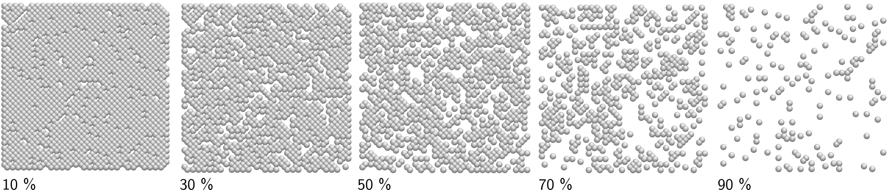
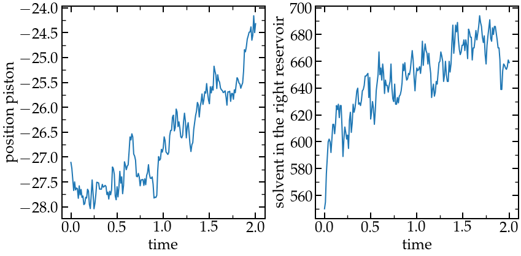

Osmosis flow through a porous membrane
Binary lennard-jones fluid flow through a rigid porous membrane
 Figure: A fluid made of a solute (large yellow spheres and solvent (small blue-ish spheres)) flowing though a porous membrane made of a single layer of atoms. The two gray layers on each sides are pistons ensuring that no evaporation occurs.
Warning: This tutorial may be obsolete.
The objective of this tutorial is to build a molecular
dynamics system made of a rigid porous membrane, two reservoirs containing
a solute and a solvent, and two pistons.
There are three main parts to this tutorial:
- System creation- First, the system will be generated using build-in LAMMPS commands, and the energy of the system will be minimised.
- System equilibration - Then, the system will be equilibrated using molecular dynamics.
- Production run - Finally, long production runs will be performed and the flux of solvent through the membrane will be measured.
Click here if you are looking for help with your project, if you want to support me (for free or not), or if you have any suggestions for these tutorials.
System creation
Create a folder named SystemCreation, and within this folder, create a LAMMPS input file called input.lammps.
Simulation initialisation
Let us define some general parameters by adding these two lines to the input.lammps file:
boundary s p p
pair_style lj/cut 2.5 Here we impose that the boundary conditions along the \(x\), \(y\), and \(z\)
axis are non-periodic shrink-wrapped ("s"), periodic ("p"), and periodic "p", respectively. With the
style "shrink-wrapped", the box integrate the atoms in that
dimension, no matter how far they move. Then we set the pair style
as Lennard-Jones, with a cut-off of 2.5 (no unit).
Note that we did not set the units, atom_style, or dimension of the simulation,
as is common to do. In that case, the default value of LAMMPS are used,
respectively lj, atomic, and 3 (for 3D).
Region creation
The first step toward the creation of the system is to define regions of space.
The first region is a parallelepiped rectangle corresponding to the initial
simulation box.

Figure: Molecular dynamics system simulation
box.
Let us set the lattice to face-centered cubic (fcc) (for the future positioning of the solid wall atoms), define the simulation_box region, and use it to create the initial box:
# System definition
lattice fcc 1
region simulation_box block -23 23 -5 5 -5 5
create_box 5 simulation_boxThe "5" in create_box indicates that the simulation will contain 5 types of atoms (solute, solvent, membrane, and pistons (x2)), see below. Here, a box of dimension 46 by 10 by 10 (unitless) is created (the dimension along \(x\) will be free to evolve during the simulation).
Note that a larger system was used to generate the figures here, you too can increase the dimensions of the system and increase the number of atoms if you have a powerful computer and/or time.
Then, let us define 5 regions that will be used to place the atoms.

Figure: Molecular dynamics system with all
five regions, from left to right : piston_left, fluid_left,
membrane, fluid_right, and piston_right.
region piston_left block -21 -20 INF INF INF INF
region fluid_left block -18 -2 INF INF INF INF
region membrane block -0.25 0.25 INF INF INF INF
region fluid_right block 2 18 INF INF INF INF
region piston_right block 20 21 INF INF INF INFWith the INF keyword (here used for \(y\) and \(z\) axis), the region encompasses the whole simulation box.
Place the atoms
The second step is to add the atoms within the system.

Figure: Molecular dynamics system with all
five types of atoms: solid (types 1, 2 and 3) and fluid (types 4 and 5).
create_atoms 1 region piston_left
create_atoms 2 region membrane
create_atoms 3 region piston_right
create_atoms 4 random 1000 654514 fluid_left
create_atoms 4 random 550 654514 fluid_right
create_atoms 5 random 50 424514 fluid_rightAtoms of types 1, 2, and 3 are placed on the fcc lattice previously defined. The atoms of the fluid (types 4 and 5) are placed randomly. Solute (type 5) is placed only on the right side of the membrane. The difference in concentration will create a difference in osmotic pressure, which will induce the flow of solvent from the left to the right.
Settings
Let us define the simulation settings:
# Simulation settings
mass * 1
pair_coeff 1*3 1*3 1.0 1.0 # solid-solid
pair_coeff 4 4 1.0 1.0 # solvent-solvent
pair_coeff 5 5 2.0 3.0 # solute-solute The mass of all the atoms are set to 1 (unitless). The Lennard-Jones pair coefficient
between atoms of types 1 to 4 are set to 1 for both the depth of the potential
well \(\epsilon\) and the distance at which the particle-particle potential
energy is zero \(\sigma\) (i.e. the size of the particle). For the solute (type 5),
both \(\epsilon\) and \(\sigma\) are set to larger values that 1, thus making the particles
of the solute respectively slightly more attractive (in order to enhance the
osmotic flow of solvent) and larger (so it is unlikely for solute to cross the membrane).
By default, the cross-parameters (i.e. between species \(i\) and \(j\)) are automatically calculated by LAMMPS.
Here, let us tune slightly these cross- parameters. First, let us
reduce slightly the affinity between the solvent and the walls, by reducing \( \epsilon_{14}, \epsilon_{24}\), and \(\epsilon_{34} \)) :
pair_coeff 1*3 4 0.8 1 # solid-solvent
This helps minimizing unnecessarily large adsorption of the solvent at the walls.
In order to help prevent the solute to cross the porous membrane too easily, let us increase
a bit its effective size "as seen by the wall", and reduce the affinity between
the solute and the wall:
pair_coeff 2 5 0.1 3.0 # membrane-soluteOutput and run
Let us dump the atom positions for visualisation purpose,
# Output
dump mydmp all atom 1 dump.lammpstrj
thermo 10and finally minimise the energy of the system and print the final positions of the atoms (which we will use as a starting configuration for the next simulation):
# Run
minimize 1.0e-4 1.0e-6 1000 10000
write_data data.lammps pair ijWith the pair "ij keyword", LAMMPS will print the simulation settings (mass and pair_coeff) in the data.lammps file. The dump file can be opened with VMD. If you do so, you will notice that some atoms are moving slightly from each other, and are now in a more acceptable position.
System equilibration
Create a second folder alongside the SystemCreation folder, and call it Equilibrium. Create a new LAMMPS input file called input.lammps in it.
Initialisation
Start by re-writing the boundary and pair_style (these information are not saved by the write_data command), and import write_data using the read_data command:
boundary s p p
pair_style lj/cut 2.5
read_data ../SystemCreation/data.lammpsRegion and groups
Let us define a region corresponding to the right side of the porous membrane, which will be used later for recording the number of solute and solvent atoms on the right side of the membrane, from which the flux will be calculated:
region right block 0 INF INF INF INF INFThen, let us group the atoms into groups, which will allow us to control them separately:
group solid type 1 2 3
group piston_right type 3
group membrane type 2
group piston_left type 1
group fluid type 4 5
group solvent type 4
group solute type 5Small optimization
Since we anticipate that the atoms of the solid will be frozen, we can ask LAMMPS to not build neighbor lists between the solid atoms (and save computational power):
neigh_modify exclude group solid solidThis command will slightly speeds up the simulation, but won't influence the result. Let us also slightly change the default parameters for the default neighbor search, and this avoid having dangerous builds (like we did in this tutorial )
neigh_modify every 1 delay 5 check yesDynamics
Now, let us address the molecular dynamics of the atoms. First, let us give an initial temperature of 1 (unitless) to the atoms of the fluid:
velocity fluid create 1.0 4928459 mom yes rot yes dist gaussianThen, let us apply the fix nve to all the atoms in order to perform the molecular dynamics (i.e. update the atom positions from the force calculation):
fix mynve all nveNote that nve is applied to all atoms, including solid atoms, even though they will be maintained frozen (they will be maintained frozen thanks to setforce and addforce fixes, see below). For the next step, let us control the temperature of the atoms of the fluid using a Langevin thermostat:
compute temperature_fluid fluid temp
fix mylgv fluid langevin 1.0 1.0 0.1 1530917 zero yes
fix_modify mylgv temp temperature_fluid
The fix_modify, which uses the temperature calculated by the compute temperature_fluid,
ensures that the temperature of the fluid is used as a reference temperature.
This must be done every time a thermostat is not applied to group all.
Then, let us force the membrane to remain frozen by canceling the force
applied on the atoms of the membrane at every timestep:
fix mysf1 membrane setforce 0 0 0In addition, we want to freeze both pistons, but still allow them to move as rigid bodies along the \(x\) direction. To do so, let us combine the setforce and aveforce commands.
fix mysf2 piston_left setforce NULL 0 0
fix mysf3 piston_right setforce NULL 0 0
variable F equal 0.025
fix myaf1 piston_left aveforce ${F} NULL NULL
fix myaf2 piston_right aveforce -${F} NULL NULLA force \(F\) is applied on the atoms of the piston along \(x\) is order to slightly compress the fluid.
Outputs
Let us make sure that our simulation is correct by printing out some information as the simulation runs, such as the piston position and number of fluid atoms in the right reservoir:
# Output
variable solvent_right equal count(solvent,right)
variable solute_right equal count(solute,right)
variable position_piston_left equal xcm(piston_left,x)
variable position_piston_right equal xcm(piston_right,x)
fix myat1 all ave/time 1000 1 1000 v_solvent_right file solvent_right.dat
fix myat2 all ave/time 1000 1 1000 v_solute_right file solute_right.dat
fix myat3 all ave/time 1000 1 1000 v_position_piston_left file position_piston_left.dat
fix myat4 all ave/time 1000 1 1000 v_position_piston_right file position_piston_right.dat
dump mydmp all atom 1000 dump.lammpstrj
thermo_modify temp temperature_fluid
Run
Finally, let us run the equilibration for 500000 timesteps and save the final state of the simulation:
# Run
thermo 10000
run 500000
write_data data.lammps pair ijRun the input using LAMMPS, it should take a few minutes.
Since we did not specified the timestep, the default value of 1 fs is used.
This equilibration time is a bit too short and has been chosen in order to keep the computational cost as low as possible.
We can ensure that the system did reach equilibrium by looking at the positions of the two pistons.
 Positions of the left and right pistons during equilibration.
Let us make sure that the membrane is not permeable to the fluid by looking at the solvent_right.dat file:
# Time-averaged data for fix myat1
# TimeStep v_solvent_right
0 550
1000 550
2000 550
3000 550
4000 550
{...}
498000 550
499000 550
500000 550Production run
Create a third folder alongside the two current folders, and call it Porosity0.5. Create a new LAMMPS input file called input.lammps in it.
Initialisation and membrane drilling
Let us start by copy-pasting similar commands as previously in the input.lammps file:
boundary s p p
pair_style lj/cut 2.5
read_data ../Equilibrium/data.lammps
region right block 0 INF INF INF INF INF
group solid type 1 2 3
group piston_right type 3
group membrane type 2
group piston_left type 1
group fluid type 4 5
group solvent type 4
group solute type 5
neigh_modify exclude group solid solid
neigh_modify every 1 delay 5 check yesThen, let us delete randomly \(50\%\) of the atoms of the membrane:
region membrane block -0.25 0.25 INF INF INF INF
delete_atoms porosity membrane 0.5 482793or
delete_atoms random fraction 0.5 no all membrane 482793 # for newer LAMMPS version if you are using the most recent LAMMPS version. This command deletes \(50\%\)
of the atoms of the membrane region. The last
number is a seed, change its value to generate different pattern, and different
porosity can be obtained by changing the fraction of deleted atoms:

Figure: Membranes with different fraction of deleted atoms
Dynamics and data printing
Finally, let us re-enter the dynamics setting used in the equilibration step, and print information into data file:
fix mynve all nve
compute temperature_fluid fluid temp
fix mylgv fluid langevin 1.0 1.0 0.1 1530917 zero yes
fix_modify mylgv temp temperature_fluid
thermo_modify temp temperature_fluid
fix mysf1 membrane setforce 0 0 0
fix mysf2 piston_left setforce NULL 0 0
fix mysf3 piston_right setforce NULL 0 0
variable F equal 0.025
fix myaf1 piston_left aveforce ${F} NULL NULL
fix myaf2 piston_right aveforce -${F} NULL NULL
variable solvent_right equal count(solvent,right)
variable solute_right equal count(solute,right)
variable position_piston_left equal xcm(piston_left,x)
variable position_piston_right equal xcm(piston_right,x)
fix myat1 all ave/time 10000 1 10000 v_solvent_right file solvent_right.dat
fix myat2 all ave/time 10000 1 10000 v_solute_right file solute_right.dat
fix myat3 all ave/time 10000 1 10000 v_position_piston_left file position_piston_left.dat
fix myat4 all ave/time 10000 1 10000 v_position_piston_right file position_piston_right.dat
fix myat5 all ave/time 10 1000 10000 f_mysf1[1] file force_membrane.dat
dump mydmp all atom 10000 dump.lammpstrj
thermo 10000
run 2000000This simulation may take several hours to complete, depending on the number of processors you use: you can use more that one processor for your simulation by using :
mpirun -np 4 lmp -in input.lammpswhere 4 is the number of desired processors.
Here I plot the number of solvent atom in the right reservoir, as well as the
position of the left piston over time:
 Positions of the left piston during the production run (left). Solvent in the right reservoir (right).
A net flux of solvent is induced from left to right (from low concentration to high concentration) due to the osmotic pressure difference. The simulation should look like this video.
Exercises
Request the solutions by email, or register here and access all the solutions + additional LAMMPS content.
Exercises 1: Measure the osmotic pressure difference
Using the simulation created here, measure the osmotic pressure induced by the solute concentration difference.
Hint: the osmotic pressure can me measured along one of the membrane.
Exercise 2: Pressure driven flux
Modify the input script and create a system with a net flux induced by mechanical pressure difference instead of osmosis.
Hint: you can either remove the solute, or use the same solute concentration in both side.
Hint: you can either remove the solute, or use the same solute concentration in both side
Click here if you are looking for help with your project, if you want to support me (for free or not), or if you have any suggestions for these tutorials.